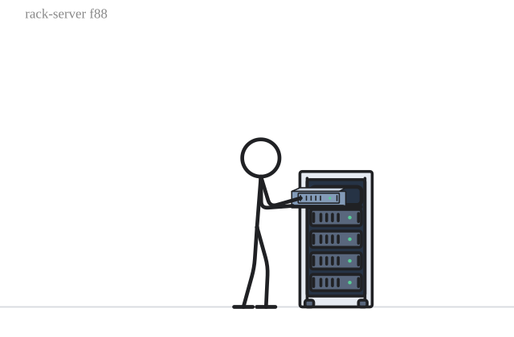

On-premises to cloud · 56.7s
Compare the options, examine the evidence and plan a pilot. All numbers are illustrative.
Motion supports the message
Compare on-premises and cloud, follow an open-source contribution from problem to shared solution, and discover how Julius Caesar changed Rome. Three original stickman stories, each under one minute.

The animation supports the slide. It does not replace it.Three short examples
Each item is under one minute. Playback is your choice.
Compare the options, examine the evidence and plan a pilot. All numbers are illustrative.
A silent animated short: one continuous performance takes a missing feature to a reviewed fix and a release other people reuse. Current reviewed motions, full-frame scenes and short on-screen text. No audio track.
A silent historical short: one continuous performance through Rome, Gaul, the Rubicon and the Senate. Current reviewed motions, full-frame scenes and short on-screen text. No audio track.
The motion building blocks
Hover or focus a preview to play at 1x. Select it for controls. Reduced-motion preferences keep hover previews still.
No matching motions. Try a different search or category.
Bring it to your workflow
Install the matching reviewed tarball. Point your agent at the installed package directory. No credentials or client settings are changed by this website.
npm install ./vallahrich-stickman-mcp-0.1.0.tgz npx stickman discover
Requires Node.js 20+. The package is not published to npm.
Using the connected Stickman MCP tools, discover stories with stickman_story, get the cloud-journey recipe, then validate and preview its animation.
Story → animation + cues → validate → compile → preview. Export only after reviewing the destination.
Setup details and limitationsFrom vocabulary to narrative
Choose the goal, name the targets and combine actions on one timeline. Keep the actor's location, object bindings and content reveals connected. The engine validates the requested sequence; the story host follows its cues during playback and seeking.
The engine is deterministic, with AI-assisted authoring. Arbitrary simultaneous actions, all catalogue props and cross-slide continuity remain separate qualification work. This preview does not publish a site or change repository visibility.